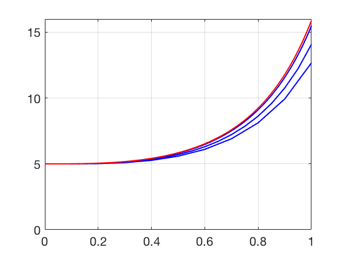

Additional Examples 6.1
1 Find the solution of the first-order linear initial value problem
\( \left\{
\begin{array}{l}
y' = 3t^2y+4t^2\\
y(0)=5.
\end{array} \right. \)
The differential equation is first-order linear, of the form \(y' = g(t)y+h(t)\). The integrating factor is \(e^{-\int g(t)\ dt} = e^{-t^3}\). The solution is
\begin{eqnarray*}
y(t) &=& e^{\int g(t)\ dt}\int e^{-\int g(t)\ dt} h(t)\ dt\\
&=& e^{t^3}\left[ \int e^{-t^3}4t^2\ dt\right]\\
&=& e^{t^3}\left(-\frac{4}{3}e^{-t^3}+C \right)\\
&=& -\frac{4}{3}+Ce^{t^3}
\end{eqnarray*}
for a constant \(C\). Solving the initial condition \(y(0) = 5\) for \(C\) yields
\(C = 19/3\). The solution is \(y(t) = -\frac{4}{3} + \frac{19}{3}e^{t^3}\).
2 Plot the Euler's Method approximate solution for the initial value problem in Additional Example 1 for step sizes \(h=0.1, 0.05,\) and \(0.01,\) along with the exact solution.
Program 6.1 can be adapted to carry out Euler's Method for this equation. The ydot function should return
3*t**2*y+4*t**2 . The red (top) curve is the exact solution. Below it lies the three approximate solutions, with step sizes
\(h=0.01, 0.05,\) and \(0.1,\) respectively.
